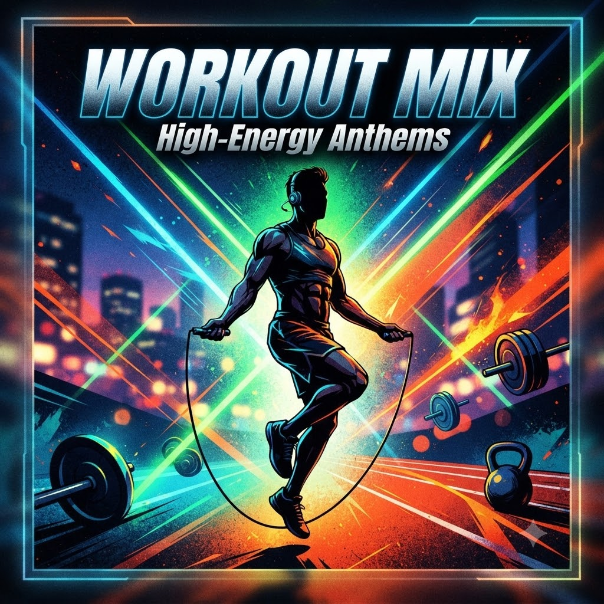
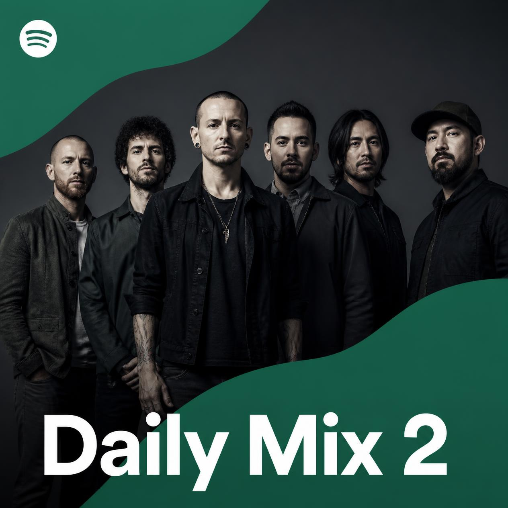
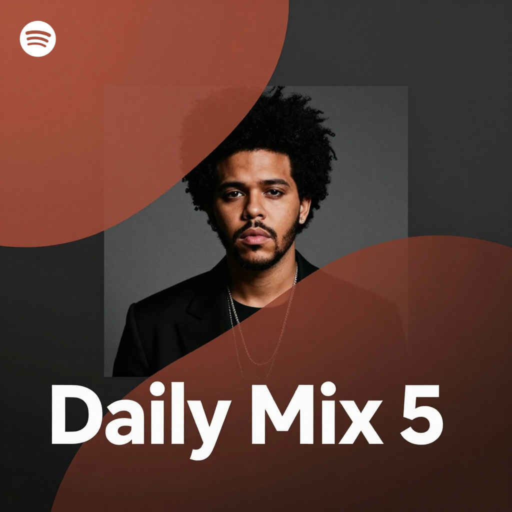
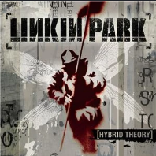

¡Hola hola!
-
Discover Weekly
Hecho para ti
-
Éxitos del momento
Playlist - Spotify
-
Lo-fi Beats
Playlist - Spotify
-
Chill Vibes
Playlist - Spotify
-
Rock clásico
Playlist - Spotify
-

Workout mixPlaylist - Spotify
Hecho para mí
- Con Morat, Sebastian Yatra, Camilo y ...
-

Con Linkin Park, Bring Me The Horizon, Three Days Grace y ... - Con BTS, Stray Kids, SEVENTEEN y ...
- Con Álvaro Díaz, Feid, Rauw Alejandro y ...
-

Con The Weeknd, Bruno Mars, Dua Lipa y ...
Escuchado recientemente
- 3AM
-

Linkin Park - Álvaro Díaz
- CACHÉ
- FERNANDOCOSTA